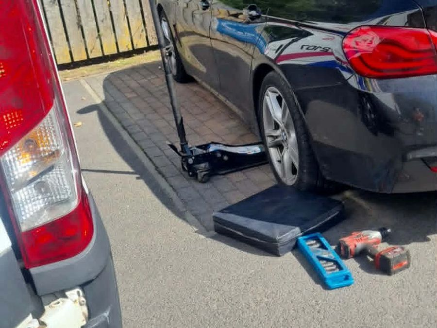
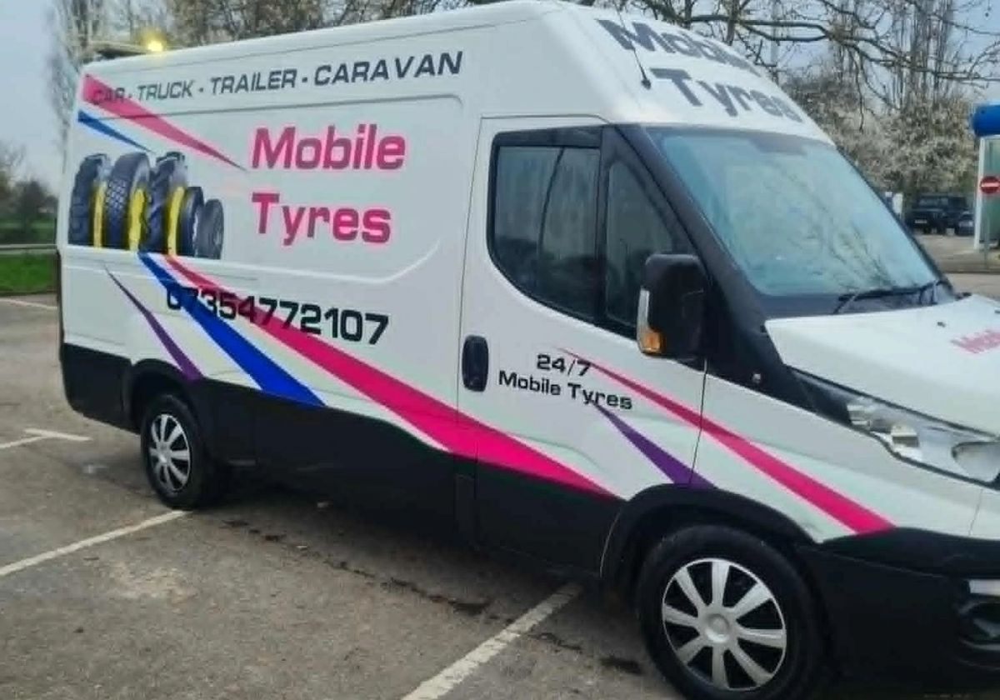

Mobile tyre fitting in Hull, day or night
Flat or damaged tyre? Craig brings new tyres to you at home, at work or at the roadside, across Hull, Beverley, Driffield and Scarborough.
Open 24 hours, 7 days a week. Call to confirm availability, price and timing.

What Craig can help with
Tell Craig where your vehicle is and what has happened. He can talk you through replacement tyres, a puncture repair or a stuck locking wheel nut, then confirm when he can get to you.
- New tyres, supplied and fitted
- Puncture repair, where the tyre can safely be repaired
- Locking wheel nut removal
- Wheel balancing
For cars, vans and caravans. Not sure what you need? Call and describe the problem or send a photo of the tyre on WhatsApp.

What to tell Craig
Calls and WhatsApp messages go straight to Craig. On WhatsApp you can also send a photo of the tyre and share your location.
- Where you areYour postcode, address or a nearby landmark, and what has happened to the tyre.
- Your vehicleThe registration, the tyre size if you can read it safely, and whether it has locking wheel nuts.
- Price and timingThe price depends on the tyre, the work and where you are. Craig confirms it, and when he can reach you, before you agree to a visit.
Look out for this van
Craig's white van is sign-written Mobile Tyres, with 07354 772107 on the side and the back doors, so you will know it is him when he pulls up.


What customers say
Craig came out to my daughters flat tyre straight away. Nail in it. Fair price for a great job. Craig was professional, helpful and gave my daughter advice for the future…
What a guy. Turned up on a Sunday for me miles away from Hull. Fantastic service.
Lads are smashing. Had an issue with one of the bolts but the chap advised us with great help. Brilliant price… and come out in 10mins at 11pm. Customer service was outstanding and did the job quickly and professionally.
Brilliant service, went above and beyond to get my tyre sorted for me! Great value for money! Would highly recommend to anyone!
5* service! Couldn't have asked for a better service. My tyre was badly damaged on something today. I was gutted I was about to cancel my easter plans for the weekend. Until I found these guys came out within 30 mins amazing price!! Would use again!
Areas Craig covers
Mobile visits across Hull and the surrounding area, including Beverley, Driffield and Scarborough. Call to check availability for your exact location.